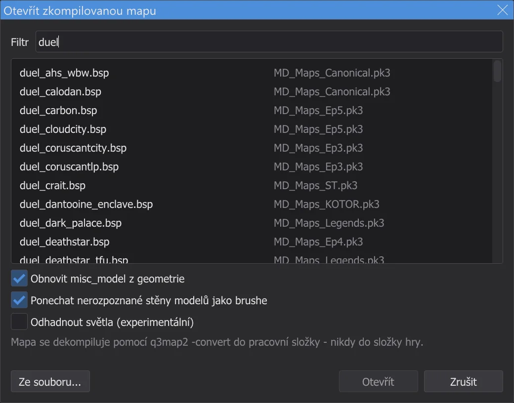
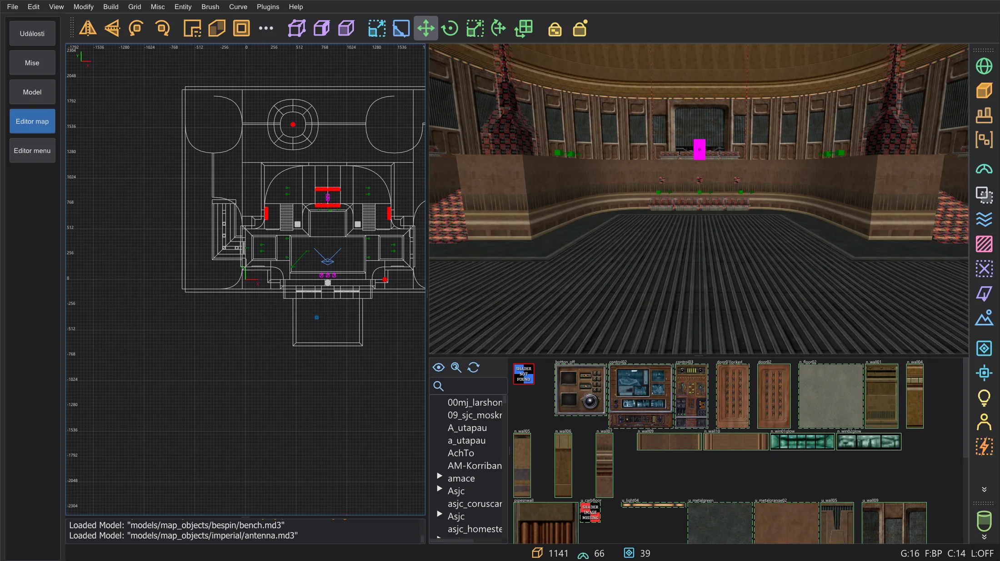
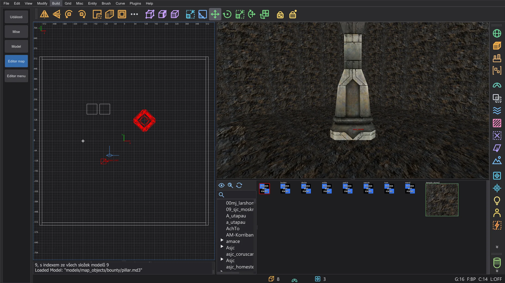
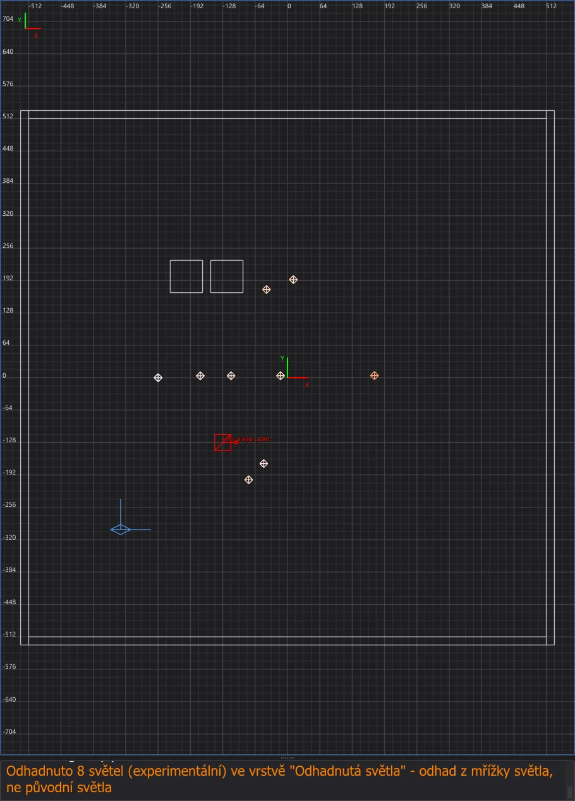
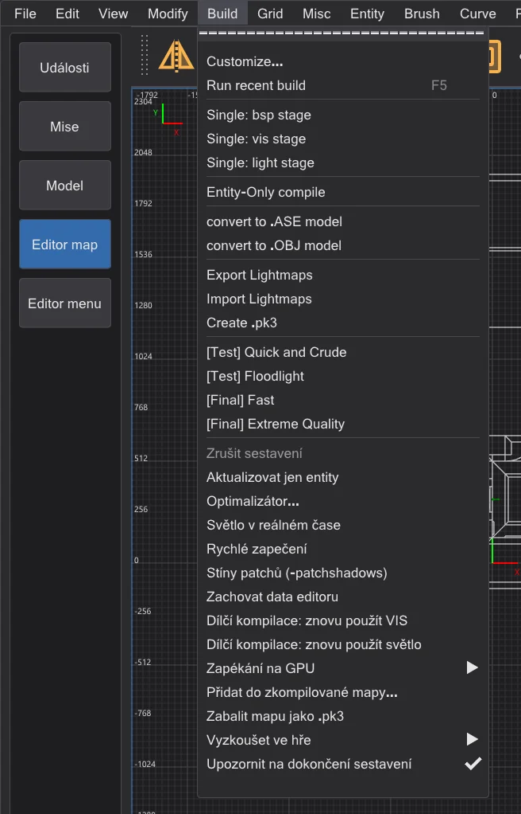

Editor map: otevírání a změna hotových map
Otevřete zkompilovanou mapu hry - přímo z jejího .pk3 - pomocí File > Otevřít .bsp, změňte její entity a zapište je zpět pomocí Build > Aktualizovat jen entity: geometrie a původní světlo zůstanou bajt po bajtu, jak jsou.
Otevření zkompilované mapy#

duel - každá mapa vedle archivu, ze kterého ji hra načítá; pod seznamem volby pro misc_model a světla.- 1
File > Otevřít .bsp vypíše každou mapu (
maps/…/*.bsp) složek hry tak, jak ji vidí hra: pro každý název jen kopii, kterou by hra načetla - mod předbase, pozdější .pk3 před dřívějším. Pravý sloupec jmenuje .pk3 nebo složku. Do Filtr napište část názvu. - 2
Dvakrát klikněte na mapu nebo ji vyberte a klikněte na Otevřít. Ze souboru místo toho otevře .bsp odkudkoli z disku.
- 3
Editor map zkopíruje .bsp do pracovní složky ve složce nastavení (
karte_bsp\<name>) - nikdy do složky hry - a převede ho zpět na mapu pomocí q3map2-convert, jako to dělá NetRadiant-Custom při importu .bsp. Pak je mapa otevřená jako.map. Má-li otevřená mapa neuložené změny, editor se nejdřív zeptá.
mp/duel1 otevřená z .pk3 hry: 362 brushů, 66 patchů a 26 entit z .bsp; na pozadí bylo znovu nalezeno 14 misc_modela 938 trojúhelníků nenalezených modelů se stalo 779 tenkými brushi ve vrstvě Nerozpoznané stěny modelů (viz Obnovení misc_model z geometrie).

Zkompilovaná mapa není původní .map. Brushe s jejich texturami, patche a entity se vrátí. Co q3map2 zapeče do .bsp, se nevrátí: modely entit misc_model, decaly a světelné entity - mapy zkompilované pro Jedi Academy je obvykle už neobsahují, jejich světlo existuje jen v lightmapách a mřížce světla. Na některých stěnách se zarovnání textury může mírně lišit. Znovu zkompilovaná s LIGHT dostane taková mapa nové světlo, spočítané bez původních světel. Chcete-li měnit jen entity - body spawnu, NPC, předměty, skripty, klíče - ponechte místo toho původní světlo. Tři vlastní funkce vrátí víc: data editoru mapy sestavené s Zachovat data editoru (vše, přesně), misc_model z geometrie a odhadnutá světla.
Co .bsp už neobsahuje#
q3map2 některé entity při sestavování mapy odstraní, takže se z .bsp vrátit nemohou - to není chyba převodu. Příkladem je mapa Jedi Academy od testera: z 388 světel se vrátilo 9, z 265 misc_model žádný, všech 233 info_null je tam.
- Světla bez targetname: v .bsp zůstanou jen světla, která lze ve hře přepínat; všechna ostatní q3map2 odstraní poté, co spočítá jejich světlo do lightmap (q3map2
writebsp.cpp, SetLightStyles). V příkladu je to 9 světel s targetname. ⟦Odhadnout světla (experimentální)⟧ místo nich umístí odhadnutá světla. misc_model: q3map2 zapeče model do geometrie mapy a entitu odstraní (model.cpp, AddTriangleModels;bspfile_abstract.cpp, UnparseEntities - pokud mapa nebyla sestavena s-keepmodels). Totéž se stane s_decala_skybox. ⟦Obnovit misc_model z geometrie⟧ modely v geometrii znovu najde.func_group: její brushe jdou do worldspawn (map.cpp, MoveBrushesToWorld), samotná skupina zmizí.- Vrstvy, klíče skupin a přesné zarovnání textur: .bsp nemá vrstvy; klíče
func_groupodejdou se skupinou; zarovnání stěny brushe se znovu sestaví z vrcholů jejího povrchu (-convert) a může se mírně lišit. - Stěny bez brushe: trojúhelníky modelu, jehož soubor chybí, a stěny nepevných brushů jsou v .bsp jen jako vykreslované povrchy. Nevrátí se ani jako brush, ani jako model; ⟦Ponechat nerozpoznané stěny modelů jako brushe⟧ je ponechá jako tenké brushe.
- Vše ostatní zůstane, například
info_null(cíle reflektorů), triggery, dveře a jejich klíče. Brushe hint, areaportal a skip se vrátí strukturální, jako ve zdroji.
Zachování dat editoru#
U vlastních map se nemusí nic ztratit. Než sestavíte, zapněte Build > Zachovat data editoru (ve výchozím stavu vypnuto, není v NetRadiant-Custom):
- Každý krok BSP běží s
-keeplights: všechna světla zůstanou v lumpu entit. Hra světla bez targetname při startu mapy uvolní (OpenJKSP_light), takže ve hře nic nestojí; optimalizátor počítá jejich bajty v kontrole Lump entit a jeho limity. - Po sestavení leží vedle .bsp
<map>.bhed: přesná zdrojová mapa s otiskem geometrie tohoto .bsp.misc_modelnejde do .bsp - hra by ho spawnula jako prázdnou entitu - ale do tohoto souboru. - File > Otevřít .bsp najde soubor vedle .bsp - i v souborech .pk3 hry - a pokud otisk sedí, otevře místo dekompilace zdrojovou mapu:
misc_model,func_group, zarovnání textur, detail a vrstvy jsou zpět. Patří-li k jinému sestavení, konzole to oznámí a .bsp se dekompiluje jako obvykle.
Obnovení misc_model z geometrie#
Bez dat editoru jsou modely v .bsp jen trojúhelníky. S Obnovit misc_model z geometrie v dialogu Otevřít zkompilovanou mapu (ve výchozím stavu zapnuto, není v NetRadiant-Custom) je editor po otevření hledá, na pozadí s oknem průběhu:
- 1
Kandidáty jsou soubory modelů hry ve složkách shaderů mapy. bhed_q3map2 je načte přesně jako kompilátor (
-bhedmodels, tentýž zavaděč modelů jako-bsp). - 2
Každý model se hledá v trojúhelnících .bsp - i když ho q3map2 sloučil do větších povrchů (
forcemeta). Jen přesné shody se stanoumisc_modelsorigin,angleneboanglesamodelscale; konzole uvede největší chybu vrcholu. - 3
Sítě modelu, které .bsp nemá (mapper je skryl, například shaderem nodraw), dostanou
_remapnatextures/system/nodraw: editor i nové sestavení ukazují přesně to, co obsahuje .bsp (q3map2 plochy nodraw nevytváří). Jen síť, která sdílí shader s nalezenou sítí, takto skrýt nelze. - 4
Modely přijdou jako jeden krok zpět. Jejich trojúhelníky se nezdvojí: dekompilace pro ně nemá brushe, takže Aktualizovat jen entity stále funguje. Změní-li se brushe nebo patche před dokončením hledání (například pomocí Import), výsledek se zahodí - otevřete .bsp znovu.

misc_model se svým úhlem a měřítkem.Na jeditemple_garden (mapa testera, zdroj známý) se vrátilo všech 265 z 265 misc_model bez jediného špatného modelu; největší rozdíl oproti zdroji je 0.002 jednotky v poloze a 0.0002° v úhlu. Původní mapy hry mají modely i z jiných složek; co se nenajde, zůstane trojúhelníky.
system/nodraw na bocích ve vrstvě Nerozpoznané stěny modelů. Zkontrolujte je - skryjte vrstvu nebo smažte, co nepotřebujete; mohou zdvojit geometrii, která existuje v jiné podobě.Odhad světel (experimentální)#
Odhadnout světla (experimentální) v dialogu Otevřít zkompilovanou mapu (ve výchozím stavu vypnuto, není v NetRadiant-Custom) umístí světla tam, odkud podle mřížky světla .bsp světlo přichází: z každého bodu mřížky se směrové světlo sleduje zpět, dokud nenarazí na geometrii, body, kde se setká mnoho paprsků, se stanou světly, jejich síla a barva pocházejí z mřížky. Jdou do vrstvy Odhadnutá světla a nesou klíč _bhed_geschaetzt 1 (q3map2 i hra ho ignorují). Světla, která zůstala v .bsp, se nezdvojí.

Zachování původního světla#

- 1
Měňte entity: klíče a hodnoty (i worldspawn), posouvejte, přidávejte nebo mažte bodové entity jako body spawnu, spawnery NPC a předměty, měňte klíče brush entit.
- 2
Build > Aktualizovat jen entity uloží mapu, vezme čerstvou kopii původního .bsp a spustí na pozadí q3map2
-onlyents(výstup v konzoli, jako při sestavení). Znovu se sestaví jen lump entit; editor ho vloží do kopie originálu, takže každý další lump - geometrie, lightmapy, mřížka světla, viditelnost - zůstane bajt po bajtu, jak byl. - 3
Konzole to potvrdí hlášením Entity aktualizovány a počtem nezměněných lumpů. Výsledkem je
<name>.bspv pracovní složce; nedotčený originál zůstane vedle jako<name>_original.bsp. - 4
Chcete-li si ji zahrát, zkopírujte nový .bsp do složky
mapshry, jak je popsáno na Editor map: kompilace mapy - u mapy z .pk3 nejlépe pod novým názvem, aby originál v .pk3 zůstal, jak je (napříkladduel1_neu.bspvmaps\mp, spuštěná pomocídevmap mp/duel1_neu).
misc_model jsou součástí geometrie. Změnilo-li se od otevření mapy cokoli z toho, Aktualizovat jen entity q3map2 nespustí; okno Aktualizovat jen entity vysvětlí, že mapu je nutné znovu sestavit s BSP, VIS a LIGHT - s novým světlem. Zpět vrátí geometrii do původního stavu a položka zase funguje.-keeplights, aby zůstala. Vlastní Entity-Only compile NetRadiant-Custom ve stejné nabídce také spouští -onlyents, ale bez kontroly a bez vložení výsledku do originálu - u map Jedi Outcast může zahodit světla a přepsat mřížku světla. U mapy otevřené pomocí Otevřít .bsp použijte Aktualizovat jen entity.